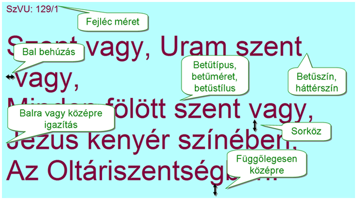

Most az ábrán fel vannak tüntetve a vetített kép beállítható paraméterei.
- a szöveg és a háttér színe beállítható a legjobb kontraszt céljából (olvass erről külön is!)
- a betűtípus és betűméret (külön a fejléc betűmérete) megadható, szükség esetén a betűk megvastagíthatók
- rosszabb fényviszonyok esetén segíthet, hogy a sorok között a szokásosnál nagyobb térköz hagyható
- a folytató-sorok (vagyis ha a verssor nem fér el egy sorban) beljebb húzhatók,
- vagy középre igazíthatók a sorok (ebben az esetben is használható a behúzás, de igazából nem hat szépen)

Az ábrán nem látszik, de beállítható:
- egy háttérkép a kikapcsolt vetítés idejére
- a háttér színe ugyanerre az esetre
- a szöveg automatikus kicsinyítése, hogy mindig beférjen a szöveg a képbe
Lássuk most, hogyan kell beállítani ezeket a paramétereket!